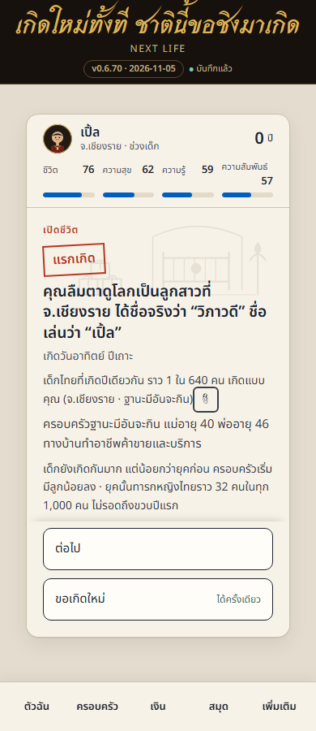
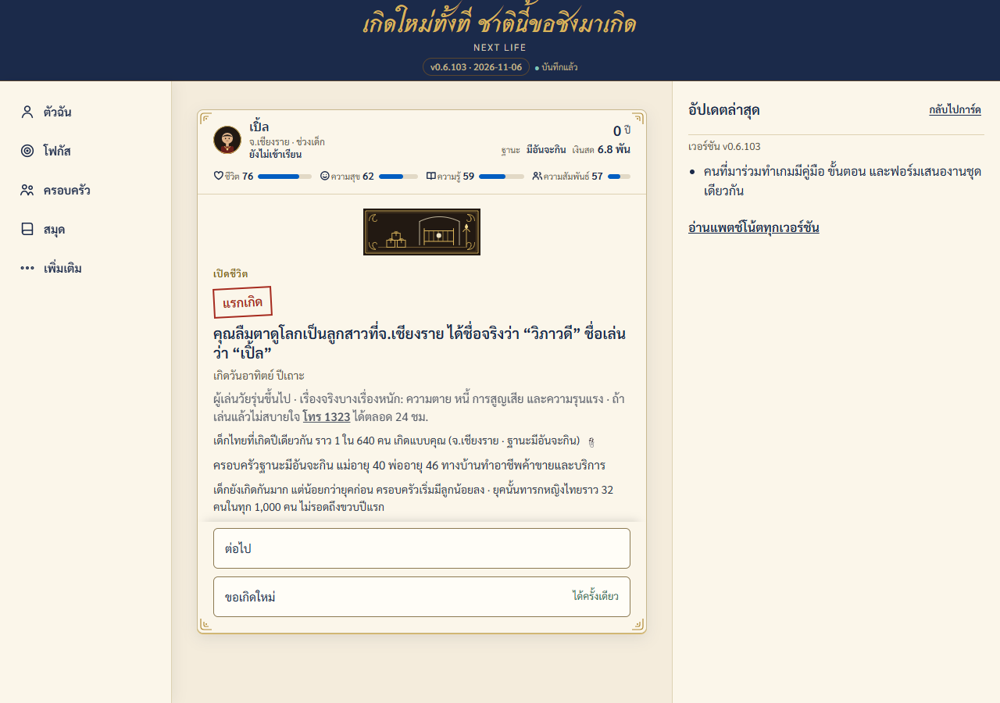
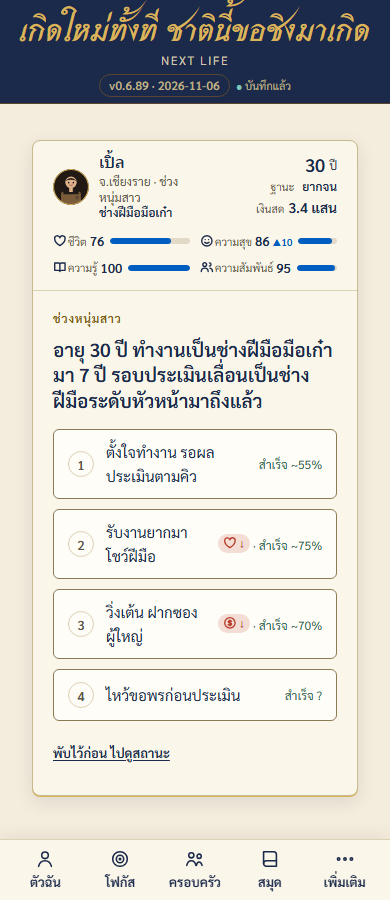
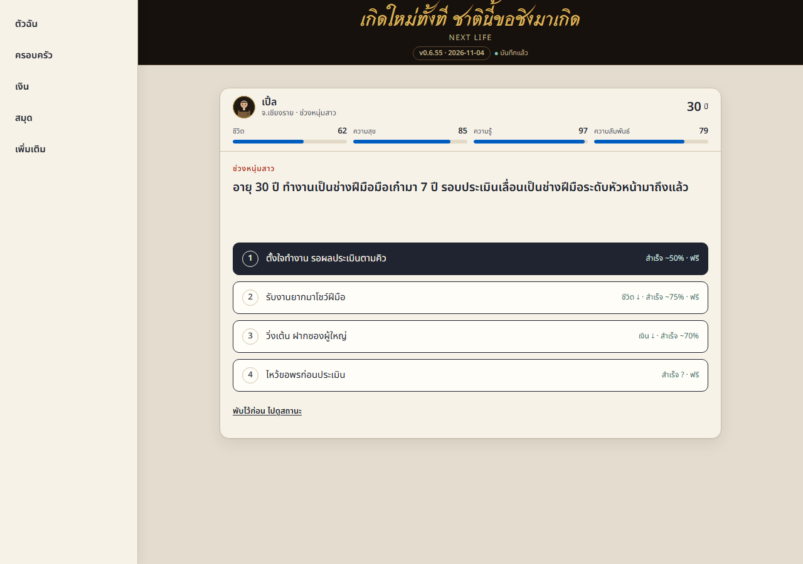
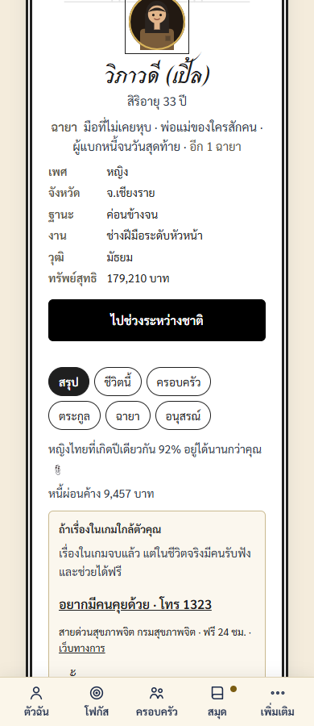
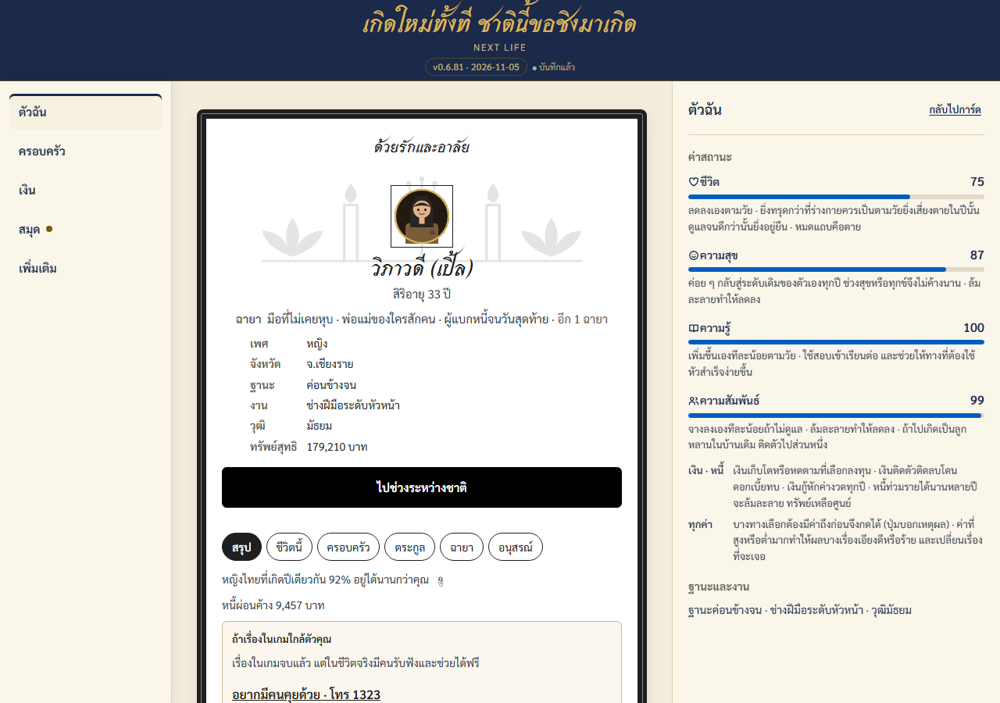

มีเฉลยสำเนาอ่านอย่างเดียวเอกสารชุดนี้เปิดกลไกที่ในเกมซ่อนไว้ คัดจาก design/ ของ repo แก้บนหน้านี้ไม่ได้
คำตัดสิน UI
หน้าเล่นใช้การ์ดใบเดียวกลางจอ แถบสถานะสองแถวบนการ์ด แถบเมนูล่าง · ธีมการ์ดสามแบบ: กระดาษ (ชีวิตนี้) · ลายรดน้ำ (ระหว่างชาติ) · ต่างโลก · งานปรับหน้าตาทุกชิ้นมีหน้า tweak ให้เจ้าของเลือกก่อนลงจริง · คำตัดสินเต็ม: คำตัดสินเกม เรื่อง ui-redo
หน้า tweak (11)
- ต้นแบบปรับสดเลือกแล้ว รอลงเกม
- หน้า tweak B67: สถิติวิญญาณ + จอนิพพาน/โพธิสัตว์เลือกแล้ว รอลงเกม
- ภาพบนการ์ด: พื้นหลังแรกเกิด + ภาพหมวดการ์ดผล (tweak)เลือกแล้ว รอลงเกม
- ต้นแบบการ์ด v2
- ปรับเลย์เอาต์เว็บเอกสาร (tweak)
- ปรับใบชวนไปต่างโลก (tweak)เลือกแล้ว รอลงเกม
- ปรับหัวการ์ด + เมนู 6 ปุ่ม + แท็บโฟกัส (tweak)ลงแล้วบางส่วน v0.6.65–66 · ใบ 49 v0.6.75เลือกแล้ว รอลงใบ 50–51 · ไม่มีเกจฐานะ
- แผงตัวฉัน: รวมเงินเลือกแล้ว รอลงใบ 131 · ประวัติงานแบบช่วงอายุ
- ต้นแบบสไตล์ 4 ทิศ เทียบใบ 02 (tweak)เลือกแล้ว รอลงเกม
- T1 ชุดสี + ฟอนต์กลาง (tweak)ชาติไทยลงเกมแล้ว (ใบ 105) · โลกอื่นคงสีเดิมรอใบ 120/121
- T1 ช่วงคั่น: สีโลกอื่นก่อน T11 (tweak)เลือกแล้ว ชุด ก ไม่แตะสีโลกอื่นจนใบ 121 (ข้อ 228)
ต้นแบบปรับสด
จอต้นแบบหน้าเล่นกดได้ (ui-redo 02) — ปรับเลย์เอาต์/ชิ้นย่อยแล้วกด "คัดลอกค่า" ส่งผู้รวมงาน · ค่าที่ปรับจำไว้ในเครื่อง (ชุดเดียวกับหน้า tweak เดิม)เลือกแล้ว รอลงเกม
หน้า tweak B67: สถิติวิญญาณ + จอนิพพาน/โพธิสัตว์
dev/tweak/b67-tweak.htmlเลือกแล้ว รอลงเกม
ภาพบนการ์ด: พื้นหลังแรกเกิด + ภาพหมวดการ์ดผล (tweak)
dev/tweak/card-art-tweak.htmlเลือกแล้ว รอลงเกม
ต้นแบบการ์ด v2
dev/tweak/cards.html
ปรับเลย์เอาต์เว็บเอกสาร (tweak)
dev/tweak/docs-tweak.html
ปรับใบชวนไปต่างโลก (tweak)
dev/tweak/entry-tweak.htmlเลือกแล้ว รอลงเกม
ปรับหัวการ์ด + เมนู 6 ปุ่ม + แท็บโฟกัส (tweak)
dev/tweak/head-tweak.htmlลงแล้วบางส่วน v0.6.65–66 · ใบ 49 v0.6.75เลือกแล้ว รอลงใบ 50–51 · ไม่มีเกจฐานะ
แผงตัวฉัน: รวมเงิน
dev/tweak/me-panel-tweak.htmlเลือกแล้ว รอลงใบ 131 · ประวัติงานแบบช่วงอายุ
ต้นแบบสไตล์ 4 ทิศ เทียบใบ 02 (tweak)
dev/tweak/style-tones-tweak.htmlเลือกแล้ว รอลงเกม
T1 ชุดสี + ฟอนต์กลาง (tweak)
dev/tweak/t1-tokens-tweak.htmlชาติไทยลงเกมแล้ว (ใบ 105) · โลกอื่นคงสีเดิมรอใบ 120/121
T1 ช่วงคั่น: สีโลกอื่นก่อน T11 (tweak)
dev/tweak/t1-worlds-tweak.htmlเลือกแล้ว ชุด ก ไม่แตะสีโลกอื่นจนใบ 121 (ข้อ 228)
สี
อ่านจากตัวแปร CSS ของหน้าเล่น (src/ui/template.html) ตอน build
:root
--page#F4ECDC--ink#1B2A4A--muted#5B5648--paper#FBF6EA--rule#C9B98F--line-strong#8C7A52--red#A62B1F--green#2F6B4F--blue#7A5C12--head#1B2A4A--lacquer#17110D--lacquer2#221912--gold#D9B45A--gold2#F0D78C--cream#EFE3C2--bronze#5A4630--bronze2#8A6D3B--sand#BFAE86--fl#015EC1--dg#B3261E--track#E2D9C6
.choice
--fx-up#2F6B66--fx-dn#B73824
.i .choice, .b .choice, .a .choice:hover, .a .choice:focus-visible
--fx-up#7FE0A8--fx-dn#FF8A7A
body:has(#app > .card.i)
--page#0B0D20--muted#A6AEDB--ink#E8ECFF--ink2#D3D8F5--paper#161A3A--paper2#232A5E--rule2#3B4BA8--fl#6FE3FF--dg#FF8A8A--track#262C5A
body:has(#app > .card.af)
--page#0E0A08--muted#BFAE86--ink#EFE3C2--ink2#E3D6B3--paper#17110D--paper2#2A2018--rule2#5A4630--fl#D9B45A--dg#FF8A7A--track#2A2018
ค่าอื่น
| ที่ | ตัวแปร | ค่า |
|---|---|---|
:root | --ink2 | color-mix(in srgb, #1B2A4A 70%, #5B5648) |
:root | --paper2 | color-mix(in srgb, #FBF6EA 45%, #F4ECDC) |
:root | --rule2 | color-mix(in srgb, #C9B98F 60%, #FBF6EA) |
:root | --seal | var(--red) |
:root | --ft | Sarabun,system-ui,sans-serif |
:root | --fh | Maitree,serif |
:root | --r | 6px |
:root | --rk | 8px |
:root | --rc | 999px |
:root | --sh | 0 1px 0 var(--gold), 0 6px 18px color-mix(in srgb, var(--ink) 10%, transparent) |
:root | --cw | 800px |
:root | --pad-y | 36px |
:root | --pad-x | 32px |
:root | --chrome | 136px |
:root | --nav-h | 60px |
.a .bk-tabs | --tu | var(--ink) |
.a .bk-tabs | --tmuted | var(--muted) |
.a .bk-tabs | --tfaint | var(--rule) |
.a .bk-tabs | --tfocus | var(--ink) |
.a .bk-tabs | --to | var(--red) |
.b .bk-tabs | --tu | var(--cream) |
.b .bk-tabs | --tmuted | var(--sand) |
.b .bk-tabs | --tfaint | var(--bronze2) |
.b .bk-tabs | --tfocus | var(--gold2) |
.b .bk-tabs | --to | var(--gold) |
:root | --rail-w | calc(220px + env(safe-area-inset-left)) |
:root | --sheet-w | 420px |
:root | --rail-w | calc(96px + env(safe-area-inset-left)) |
ตัวอักษร
ฟอนต์ที่ฝังในหน้าเล่น (src/ui/fonts) — ตัวอย่างวาดด้วยฟอนต์จริงของเกมอยู่ต้นกรอบแรกในหัวชิ้นส่วนตัวอย่าง
- Sarabun 400 Sarabun-Regular.woff2
- Sarabun 600 Sarabun-SemiBold.woff2
- Srisakdi 700 Srisakdi-Bold.woff2
- Maitree 600 Maitree-SemiBold.woff2
ชิ้นส่วนตัวอย่าง
CSS ของเกมจริง markup เขียนเองตอน build · กรอบไม่รันสคริปต์และไม่แตะเซฟในเครื่อง · หน้าจอเกมเปลี่ยนแล้วตัวอย่างอาจไม่ตรง ดูภาพจอด้านล่างประกอบ
ภาพจอเกม 390 / 1280
ภาพจาก npm run shots (ใบ 45) — เลนที่แก้จอเกมรันแล้ว commit ภาพ
เริ่มชีวิต


กลางชีวิต


ตาย

